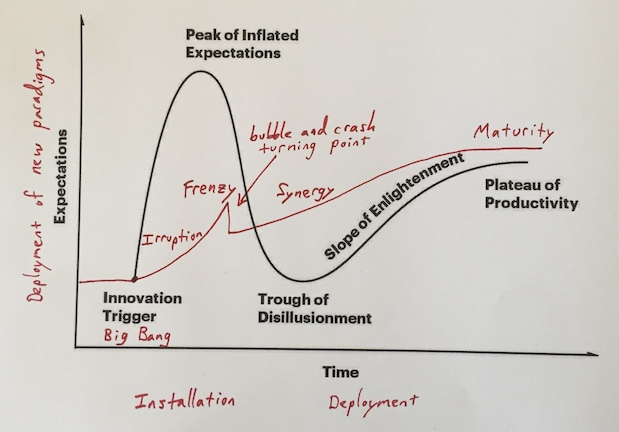
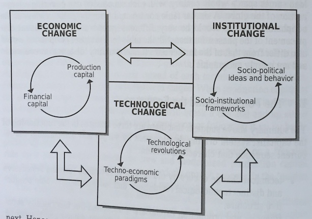

Technological Revolutions and Financial Capital, by Perez
Tuesday July 28, 2020
Perez offers a heterodox abduction from economic history, in the tradition of Schumpeter and Kondratiev, suggesting Technological Revolutions and Financial Capital dance through "great surges" of 40 to 60 years, like giant hype cycles driving development.

(The hype cycle analogy isn't perfect; see elsewhere for summarization of Perez's formulation and five surges.)
Taking Dosi's extension of Kuhn's scientific paradigms to technological paradigms and further involving economics and societal institutions (especially as capitalism vs. regulation), the ideas are not wholly original, but neither are they very common.

"The justification for an exercise that claims to give order to the historical record at the expense of its infinite complexity and richness is its heuristic value." (page 161)
Perez doesn't seem happy that the historical approach fell out of favor in economics, and it's neat to see her analysis cover hundreds of years. This is economic history that doesn't just refer to Bretton Woods, but also the Peterloo Massacre, Corn Laws, and nabobs, to sample a few references. You know about May 1968 in Europe, right?
"The role of the economic historian, as Gay perceived it, was to study and comprehend these cycles and to suggest ways of restraining their excesses." (page 158, quoting Cruikshank, extended quote below)
This book is the closest thing I've seen to Asimov's psychohistory, as in the Foundation books. The time-scale (around 50 years vs. thousands) and claimed predictive power (little vs. godlike) are very different, but the ideas of anticipating long-term shifts and being ready for them are analogous, and Perez does discuss some psychosocial aspects, as in "ethical softening" during parts of her surges.
The book was published in 2002. It was a theory that fit the dot-com crash. How has the theory fit since then? The financial industry was not much reined in, for one.
"However, this change in the rules of the game may not be easy, because the financial collapse has not been spectacular enough to wipe out the excess self-confidence." (page 168, on the dot-com crash)
Maybe the Great Recession was just a late example of financial adventurism. The theory suggests that shouldn't be happening so much during the deployment phase of the age of information. It's easy to feel like markets were never really brought back in line with the real economy. Have we been in a "gilded age"?
It should be about time for the start of a new surge. What will the next big technology be?
"It has often been suggested that biotechnology, bioelectrics and nanotechnology might conform the next technological revolution." (page 13)
From where I sit, AI/ML seems like a good candidate. Should we throw in VR/AR? Blockchain? Private space? Does the social web constitute a separate technology?
The book's theory treats technologies as available resources just waiting for capital to fund them into prominence. I think this may be too much of a simplification. In particular, it's pretty hard to guess in advance which technologies will take off and which will fizzle, and I don't think there's any guarantee that there will always be a technology at hand substantial enough to power another surge.
Alternatively, what if an even longer phase is coming to an end? What if declines in productivity growth are a real indication of the sigmoid peak of the Market Society overall, and extended financial weirdness a sign of an impending larger transformation of societal system?
It certainly feels, in 2020, as if the world sits on a knife-edge, with forces pulling in multiple directions. Hopefully history will help us to create a worthy future.
"... Schumpeter's own view that aggregate figures conceal more than they reveal." (page 61, refs Schumpeter (1939) Vol. 1, pp. 43-4, I checked the ref and it's correct, but unfortunately Schumpeter's language is not very quotable)
"People living through the period of paradigm transition experience great uncertainty as to the 'right' price of things (including that of stocks, of course)." (page 62)
"So again, and not surprisingly, nothing in the capitalist system is clear and simple." (page 67)
"Schumpeter defined capitalism as 'that form of private property economy in which innovations are carried out by means of borrowed money'." (page 72, refs Schumpeter (1939) p. 223)
"There is a certain amount of circularity in all these observations, because the phases have been dated taking the occurrence of crises into account." (page 79)
Interesting reference: The End of Finance: Capital Market Inflation, Financial Derivatives and Pension Fund Capitalism
"The full history of the readjustment of relative paper and real values at the beginning of the twenty-first century will only be appropriately judged with hindsight." (page 112)
"As with many processes in capitalism, it is by taking a successful behavior to its extreme that it turns into failure." (page 115)
"To begin with, knowledge, experience and information have become capital goods." (page 144)
"Without recognizable labor unions, salaries would not have been enough to serve as solvent demand much beyond food and basics." (page 145)
Page 146 has an interesting meta-analysis of the field of economics viewed through the lens of the book's theory.
"Technology is the fuel of the capitalist engine." (page 155)
"[E.F. Gay] developed a dynamic vision of economic history [as] a record of swings of the pendulum between periods when social controls dominated and periods dominated by the actions of aggressive individuals. The former periods were static, characterized by security and stability. The latter periods ushered in by the introduction of new tools, weapons or other forces, were controlled by the powerful individuals who introduced these forces. These dynamic periods ... were crucial to economic development ... The role of the economic historian, as Gay perceived it, was to study and comprehend these cycles and to suggest ways of restraining their excesses." (page 158, quoting Cruikshank, 1987, on the founding Dean of Harvard Business School)
"The Methodenstreit between the historical school and the neo-classicals, which in practice expelled the state, Society and the historical context from economic theory, occurred in the period of installation of the third surge, which in the periodization proposed here is parallel to the installation period of the fifth, when the monetarists defeated the Keynesians." (page 162)
"The ultimate test of usefulness of a model such as the one presented here is in relation to policy making, be it in business, in social organizations or in government." (page 163)
"Yet if this model is a reasonable approximation to the way the system works then it is wise to try to engage in the design of regulations and institutions so they will be ready and in the arena of debate when the moment comes for them to be accepted." (page 165)
"A golden age of worldwide expansion is possible." (page 171)